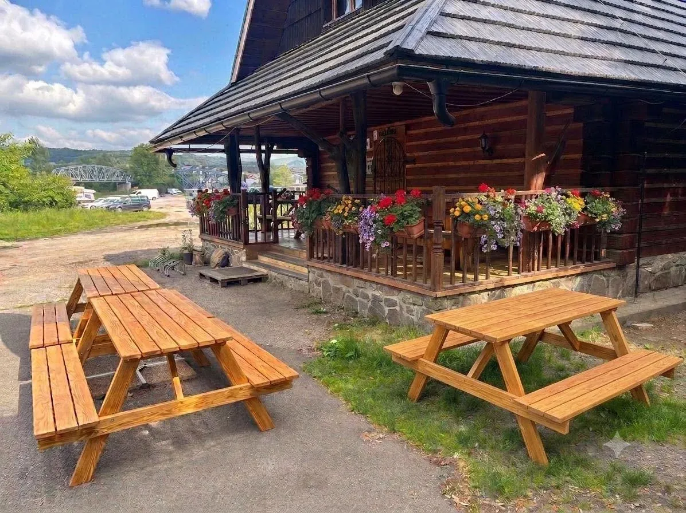
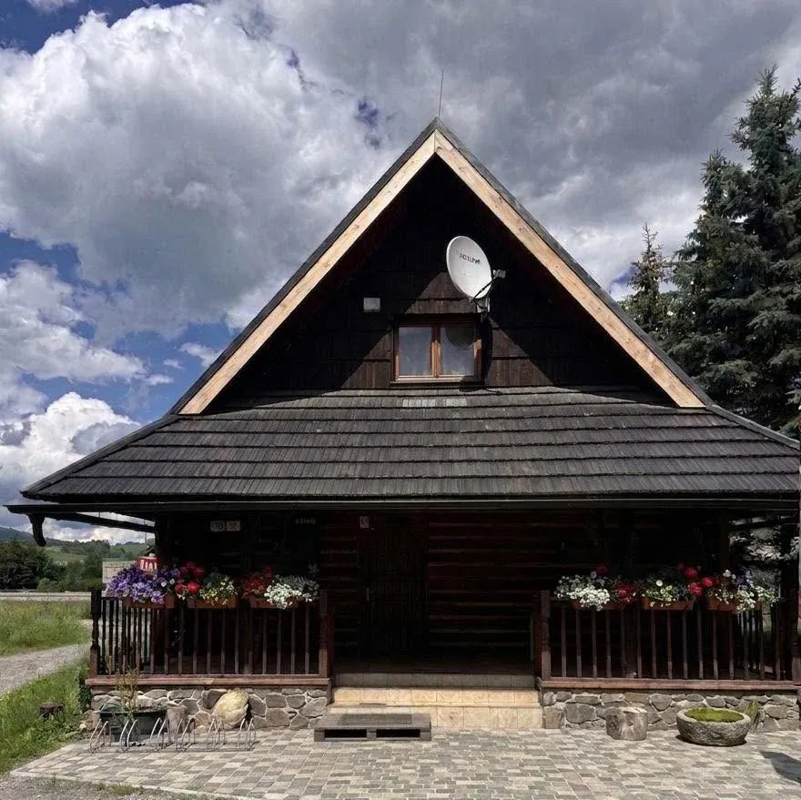

Koliba · jedlo · pivo · pri Hrone
Koliba Uhlisko
„Koliba,jedlo,pivo“— popis na Facebooku
Aktuálna hladina
Živý stav podľa otváracích hodín (zdroj: Google) — bez rezervácie, stačí prísť.
Načítavam stav…
| Pondelok | 10:00–22:00 |
| Utorok | 10:00–22:00 |
| Streda | 10:00–22:00 |
| Štvrtok | 10:00–22:00 |
| Piatok | 10:00–22:00 |
| Sobota | 13:00–22:00 |
| Nedeľa | 13:00–22:00 |
Na zahriatie
„S príchodom chladnejších dní vás pozývame do Koliby Uhlisko na chvíľu tepla a pohody. Ponúkame horúci čaj horúcu čokoládu a domácu kapustnicu, pripravenú s láskou a podľa tradície. Príď s partiou, po práci alebo len tak. Posedíme, zahrejeme sa a pokecáme.“Facebook Koliba Uhlisko, 25. 9. 2026
Čapované pivo
Zrub na brehu Hrona
Štítová strecha z dreveného šindľa, kamenný sokel a muškáty na zábradlí terasy.
Koliba Uhlisko je drevená zrubová stavba pri Hrone v Banskej Bystrici — vonkajšia terasa s drevenými stolmi pod prístreškom je stavaná na posedenie s partiou, po práci alebo len tak na niečo teplé.

Štart splavu Hrona
Vodácka požičovňa Hastrman štartuje splavy Hrona priamo od Koliby Uhlisko — rafty, kanoe aj kajaky, trasy od 1 do 4 hodín.
Splav zabezpečuje Vodácka požičovňa Hastrman, nie Koliba Uhlisko — trasy podľa ich príspevku z 20. 7. 2026. Ceny a rezervácie priamo u požičovne.
Terasa pri vode
Čo hovoria hodnotenia
Google — priemerné hodnotenie z 3 recenzií
Facebook — sledovateľov, 2 recenzie
Zdroj: Google a Facebook Koliba Uhlisko, stav k 26. 9. 2026.
Kontakt a otváracie hodiny
- Adresa
- Mičinská cesta 3 (4158/3), Banská Bystrica
- Telefón
- 0911 118 056
- Kontakt
- Messenger — Koliba Uhlisko
- Hodiny
- Po–Pi 10:00–22:00, So–Ne 13:00–22:00